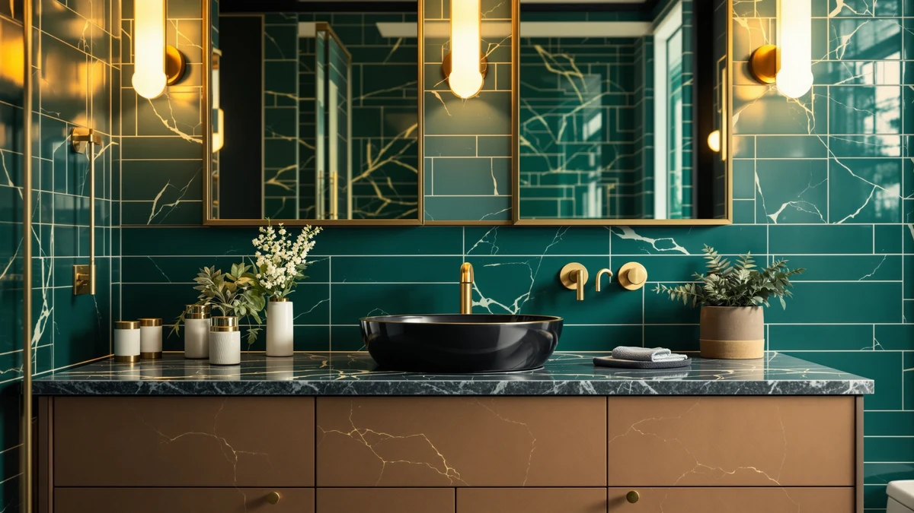

The Best Black Vanity Tops (2026)
Prices and picks verified as of September 2026. Independent, reader-supported reviews.


Quick Answer
The 48" Farmhouse Bathroom Vanity from chartustriable is the best black vanity top for most bathrooms, since it pairs a full-width resin sink and matching mirror with a wood grain black finish for $429.99. If your space is tighter, the ELEVACHIC 30" delivers a matched black cabinet and ceramic top for less than half the price.
Our pick: 48" Farmhouse Bathroom Vanity with, $429.99 Check Price on Amazon
Bottom line: our top pick is the 48" Farmhouse Bathroom Vanity with Sink & Faucet & Mirror at $429.99. The best budget option is the ELEVACHIC 30" Bathroom Vanity with Sink Combo at $169.95.
Things to Know Before You Buy
- Not every top is the same material. The picks here split between resin, ceramic, and SMC composite, and each behaves differently under daily water contact and cleaning. Ceramic and SMC resist scratches better than resin, though resin keeps the price down on our top pick.
- Price ranges from $169.95 to $429.99 among the seven vanities here. The ELEVACHIC 30" sits at the low end with a barn-door cabinet, while the chartustriable 48" farmhouse pick sits at the top with a full sink, faucet, and mirror included.
- Width matters as much as color. These black vanity tops run from 24 to 48 inches, so measure your wall space before you shop by finish alone. A 48-inch top in a 30-inch alcove will overhang the cabinet on both sides.
- Most of these ship as a matched cabinet and top, not a top you install separately. If you already own a black-finish cabinet and only need a replacement top, most picks here won't work since the sink, faucet holes, and top are built as one piece.
- A matte black-framed shower door, like our seventh pick, can tie the whole black-finish look together. It won't replace a vanity top, but it's worth considering if you're matching hardware finishes across a full bathroom remodel.
The best black vanity tops have to hide water spots, resist daily wear, and still look intentional rather than like an afterthought bolted onto a white cabinet. We compared seven black-finish options for this guide, from a compact 24-inch shaker cabinet to a full 48-inch farmhouse vanity with the sink, faucet, and mirror already installed. Each one pairs a black top with a matching black cabinet, so you're not stuck color-matching a separate top to hardware you already own.
Material is where these picks diverge the most. The chartustriable 48" farmhouse vanity and the ELEVACHIC 30" both use a resin or ceramic sink built into the countertop, while the IRONCK 36 Inch uses a seamless SMC surface designed to mimic stone without the weight or the price. The two smaller IRONCK 30-inch picks stick with ceramic basins, a material that resists scratching well but shows water spots faster than a matte resin top if you don't wipe it down.
Price spreads from $169.95 for the ELEVACHIC barn-door vanity to $429.99 for the chartustriable farmhouse pick, and that gap tracks what's included as much as size. The farmhouse vanity ships with a faucet and mirror in the box, while several of the IRONCK picks leave the faucet as a separate purchase. Below, we break down what each pick gets right, where it falls short, and which bathroom it actually fits.
Why You Should Trust Us
Best Bathroom Vanities covers one category of home fixture: the cabinets, tops, and sinks that make up a bathroom vanity. Ilane Tall has spent the past several years comparing vanity listings across price tiers and finishes, checking how manufacturer specs hold up against verified buyer feedback. For this guide to the best black vanity tops, we pulled pricing, material, and included-hardware details directly from each product listing and checked them against the seller's own specifications. We don't run a paid testing lab and we don't invent expert quotes. We read the same listings you can, compare what's actually included, and tell you where a black vanity top earns its price and where it doesn't.
How We Picked
We started by requiring a black or near-black finish on both the cabinet and the top, since a mismatched pairing defeats the point of shopping for a black vanity top in the first place. From there we compared listed prices, from $169.95 to $429.99, to cover a real range of bathroom remodel budgets instead of clustering near one price point. We checked top material, resin, ceramic, or SMC, since that detail affects how the surface holds up to daily splashing and cleaning. We also noted what ships in the box: a faucet and mirror included, as with the chartustriable farmhouse pick, changes the total project cost compared with a vanity that leaves the faucet as a separate purchase. We excluded listings with vague or missing dimensions, since a black vanity top project depends on knowing the exact footprint before you order.
How We Compared
Comparing a bathroom vanity before it ships to your house means comparing specifications and verified owner feedback, not testing a finished piece in a showroom. For each pick, we checked the listed top material and basin dimensions against the manufacturer's own claims, and we flagged which picks include a faucet and mirror versus which ones leave those as add-on purchases. We compared included hardware, drawers, doors, sinks, and drains, line by line, since two vanities at a similar price can include markedly different amounts of storage. We also compared each black finish's stated durability, soft-close hinges, FSC-certified wood, tempered glass, against what the listing actually specifies, and priced each pick against the others in this guide to see which delivers the most value among the best black vanity tops at its price point.
Our Picks

48" Farmhouse Bathroom Vanity with
What we like
- Ships with a resin sink, faucet, and matching mirror included, cutting out separate purchases
- Wood grain black finish adds texture that the flat-black picks here skip
- Deep resin basin with an overflow function guards against splashing during daily use
- At 47.2 inches wide, it's the largest true black vanity top of the seven
Flaws but not dealbreakers
- At $429.99, it costs more than double the ELEVACHIC 30-inch pick
- Ships in two separate packages, so assembly takes longer than the fully assembled picks here
- At 47.2 inches wide, it needs a nearly full 48-inch wall opening, ruling it out for tighter bathrooms
| Material | MDF / engineered wood |
| Size | 48 Inch |
The 48" Farmhouse Bathroom Vanity from chartustriable is our pick for the best black vanity top because it's the only option here that arrives as a full package: cabinet, resin sink, faucet, and a matching mirror, all in a wood grain black finish. At $429.99, it costs more than the other picks here, but that price covers a faucet and mirror that most competitors leave as separate purchases. The rectangular resin countertop extends nearly to the edge of the 47.2-inch cabinet, giving it more usable counter space than the narrower 24- and 30-inch picks here.
The vanity ships in two packages, cabinet and sink separately, and the listing includes installation videos rather than requiring a professional. Overall dimensions run 17.5 inches deep by 47.2 inches wide by 33.3 inches tall, with drawers measuring 19.8 by 13.7 by 7.8 inches, so it fits a standard 48-inch bathroom wall without modification. The deep resin basin includes an overflow function and strong impact resistance according to the listing, which matters for a sink that will see daily splashing over years of use.

ELEVACHIC 30" Bathroom Vanity with
What we like
- At $169.95, it's the least expensive black vanity top of the group
- Sliding barn door saves swing clearance in a tight bathroom layout
- Integrated ceramic sink and 30-by-18-inch top uses a high-density glossy basin for durability
- Gold handle accents contrast the black wood panels for a two-tone look
Flaws but not dealbreakers
- Density board construction holds up to daily humidity but isn't as moisture-resistant long-term as MDF
- No faucet or mirror included, unlike the chartustriable pick
- At 30 inches wide, it won't fill a 48-inch wall opening on its own
| Material | MDF / engineered wood |
| Size | 30 Inch |
The ELEVACHIC 30" is the value pick in this roundup of the best black vanity tops, pairing classic black wood panels with a gold handle for a two-tone look at less than half the price of our top pick. At $169.95, it undercuts every other complete vanity here while still shipping with an integrated white ceramic sink built into a 30-by-18-inch countertop. The sliding barn door is a practical detail as much as a style choice, since it needs no swing clearance in a bathroom where a hinged cabinet door might bump into a toilet or tub.
The high-density ceramic basin carries a glossy glaze that the listing describes as easy to clean, though a glossy finish tends to show water spots faster than the matte resin top on our 48-inch pick. Three independent drawers give it storage roughly on par with the other 30-inch options here, and the density board cabinet construction is built to hold up in a humid bathroom, though it's a step below the MDF or FSC-certified wood used on several competing picks.

Yaheetech 24in Bathroom Vanity with
What we like
- Soft-close hinges keep the cabinet quiet even with daily use
- CARB P2-compliant MDF holds up better to warping than basic particleboard
- Freestanding ceramic sink includes overflow protection and three pre-drilled faucet holes
- At 24 inches wide, it fits bathrooms too narrow for any other pick here
Flaws but not dealbreakers
- No faucet included, so budget for one separately
- A single drawer offers less storage than the multi-drawer picks here
- At 24 inches, it won't work as a primary vanity in a larger bathroom
| Material | MDF / engineered wood |
| Size | 24 Inch |
The Yaheetech 24in earns its spot among the best black vanity tops here as the pick for bathrooms that simply don't have room for anything wider. At $218.49, it's priced between the ELEVACHIC and the IRONCK 30-inch picks despite its smaller footprint, a tradeoff for CARB P2-compliant MDF construction and soft-close hinges that the listing says hold up to daily wear. The black shaker cabinet style is more understated than the farmhouse or barn-door picks here, which suits a small powder room where you don't want the vanity competing with the rest of the space.
The freestanding ceramic sink is rated to resist cracking under regular pressure, and it includes an overflow function along with three pre-drilled tap holes for a 4-inch center-set faucet, which isn't included. Installation height matters here: the listing specifies the wall drain and water inlet should fall between 18.3 and 26.4 inches from the floor, so it's worth checking your existing plumbing rough-in before you order.

IRONCK 36 Inch Bathroom Vanity
What we like
- Seamless SMC top mimics the look of stone without the weight or fragility of real quartz
- Soft-closing doors and drawers, plus an adjustable interior shelf
- Gold metal handles contrast the deep black finish for a contemporary look
- FSC-certified wood construction targets sturdier long-term use than basic particleboard
Flaws but not dealbreakers
- At $319.99, it's priced above several smaller picks here, though still below what a professionally installed quartz top typically runs
- Faucet isn't included, adding to the total project cost
- 36 inches is a specific footprint that won't suit narrower or much wider bathroom walls
| Material | MDF / engineered wood |
| Size | 36 inches (W) x 34.3 inches (H) x 18 inches (D) |
The IRONCK 36 Inch is our budget pick for buyers who want the look of a stone black vanity top without paying for an actual quartz slab and professional install. At $319.99, it costs more than the smaller picks here, but that price covers a seamless all-in-one SMC sink and countertop that the listing says resists stains while offering the sleek look of stone at a fraction of the weight. Sleek gold metal handles contrast the deep black finish, giving it a more contemporary look than the flatter matte-black picks here.
Full-extension drawers and cabinet doors use soft-close hinges throughout, and an adjustable interior shelf lets you reconfigure the cabinet for taller bottles or folded towels. FSC-certified wood construction backs the cabinet's long-term sturdiness, a detail worth checking if you're comparing black vanity tops for a bathroom that sees heavy daily use.

IRONCK 30" Bathroom Vanity with
What we like
- Seamless ceramic top spans 30 by 18.3 inches with a 17.3-by-10.6-inch basin for ample washing room
- Two soft-closing cabinets plus a two-tier slide drawer add more storage than the single-drawer Yaheetech pick
- Open-back freestanding design simplifies installation around existing plumbing
- Three pre-drilled faucet holes support a standard 5.5-inch center-set faucet
Flaws but not dealbreakers
- Faucet not included, matching most picks here except the chartustriable farmhouse vanity
- At 34 inches tall with a fixed height, confirm it matches your existing plumbing rough-in before ordering
- The glossy ceramic top shows water spots faster than the matte resin top on our 48-inch pick
| Material | MDF / engineered wood |
| Size | 30-Inch |
The IRONCK 30" with Ceramic Sink and 2 Drawers targets standard-size bathrooms with a seamless rectangular ceramic top that measures 30 by 18.3 inches, with a basin spanning 17.3 by 10.6 inches. At $269.99, it sits in the middle of this group's price range, and the two soft-closing cabinets plus a two-tier deep slide drawer give it more storage compartments than the single-drawer Yaheetech pick at a similar width. Three pre-drilled center-set faucet holes are spaced for a standard 5.5-inch faucet, which you'll need to source separately.
The freestanding design uses an open back, a detail that simplifies routing plumbing supply lines during installation compared with a fully enclosed cabinet back. At 34 inches tall, the compact footprint is built for standard and small bathrooms, and the open-back layout gives some flexibility in exact placement, though the fixed height means you should confirm your existing rough-in plumbing lines up before you buy.

IRONCK Bathroom Vanity with Ceramic
What we like
- Flexible side storage cabinet installs on either the left or right side to fit your layout
- Four total storage areas, more than most single-cabinet picks here
- Seamless ceramic top spans 30 by 18.5 inches with an 18.46-by-10.29-inch basin
- Three pre-drilled faucet holes support a standard center-set faucet
Flaws but not dealbreakers
- Confirm clearance on your chosen side before ordering, since the side cabinet adds width beyond the main 30-inch unit
- Faucet not included
- At $219.99, it's priced close to the IRONCK 30" 2-drawer pick, so the side cabinet is the main reason to choose one over the other
| Material | MDF / engineered wood |
| Size | 30-Inch |
The IRONCK Bathroom Vanity with Ceramic Sink stands out among the best black vanity tops here for its flexible side storage cabinet, which installs on either the left or right side depending on your bathroom layout. At $219.99, it costs slightly less than the other IRONCK 30-inch pick here, and the four total storage areas, closed-door storage, smooth-gliding drawers, and three-tier open shelves, give it more places to organize daily essentials than a single-cabinet vanity of the same width.
The seamless rectangular ceramic top measures 30 by 18.5 inches with an 18.46-by-10.29-inch basin, close in size to the other IRONCK ceramic pick but not identical, and it comes with three pre-drilled 5.5-inch center-set faucet holes. If your bathroom layout has a narrow gap next to the vanity that a standard cabinet would waste, the side-mounted storage here puts that space to use instead.

Semi-Frameless Sliding Glass Shower Door
What we like
- Matte black aluminum frame matches the black finish on every vanity here
- 1/4-inch SGCC and ANSI Z97.1 certified tempered glass meets standard safety glazing requirements
- Adjustable 56-to-60-inch width fits most standard openings without extra drilling
- Nano easy-clean coating on the inner glass surface reduces water spot buildup
Flaws but not dealbreakers
- It's a shower enclosure, not a vanity top, so it won't factor into your sink or countertop decision
- Semi-frameless double-sliding design doesn't convert to a hinged swing door
- At $259.99, it's a separate line-item cost on top of whatever vanity you choose
| Material | MDF / engineered wood |
| Size | 60" W x 72" H |
The Semi-Frameless Sliding Glass Shower Door from Morandié isn't a black vanity top, but we included it here because it's the matching hardware finish for anyone doing a full black-and-glass bathroom remodel around one of the vanities above. At $259.99, the matte black aluminum frame is built to fit shower openings from 56 to 60 inches wide by 72 inches tall, and the top and bottom tracks can be trimmed for a precise fit without extra drilling into your existing tile.
The double bypass sliding design uses two panels that glide independently from either side, a space-saving detail compared with a hinged door that needs floor clearance to swing open. The 1/4-inch tempered glass carries SGCC and ANSI Z97.1 safety certification, and a nano easy-clean coating on the inner-facing surface is meant to cut down on the soap residue and water spots that build up fastest on a glossy black-and-glass bathroom.
Quick Comparison
Here's how all seven best black vanity tops in this guide stack up on material, price, and what each one is built for.
| Product | Material | Price | Rating | Best for | Get it |
|---|---|---|---|---|---|
| 48" Farmhouse Bathroom Vanity with | MDF / engineered wood | $429.99 | 4 | Complete 48-inch setup with faucet and mirror included | View on Amazon → |
| ELEVACHIC 30" Bathroom Vanity with | MDF / engineered wood | $169.95 | 4 | Lowest price for a matched black cabinet and top | View on Amazon → |
| Yaheetech 24in Bathroom Vanity with | MDF / engineered wood | $218.49 | 4 | Small bathrooms and powder rooms | View on Amazon → |
| IRONCK 36 Inch Bathroom Vanity | MDF / engineered wood | $319.99 | 4 | A wide stone-look top without a real quartz install | View on Amazon → |
| IRONCK 30" Bathroom Vanity with | MDF / engineered wood | $269.99 | 4 | Standard bathrooms wanting more soft-close storage | View on Amazon → |
| IRONCK Bathroom Vanity with Ceramic | MDF / engineered wood | $219.99 | 4 | Bathrooms that need extra flexible-side storage | View on Amazon → |
| Semi-Frameless Sliding Glass Shower Door | MDF / engineered wood | $259.99 | 4 | Matching black frame for a full remodel, not a vanity top | View on Amazon → |
Do black vanity tops show water spots and toothpaste splatter more than white ones?
A matte or textured black top, like the resin sink on our 48-inch farmhouse pick, hides mineral spots and soap residue better than a glossy black finish.
Can I pair a black vanity top with a white or wood cabinet?
Yes, but every pick in this comparison ships as a matched black cabinet and top, which sidesteps the finish-matching problem entirely.
The Competition
The two IRONCK 30-inch picks compete most directly with each other, since both use the same seamless ceramic top construction at a similar price. The 2-Drawer version costs $269.99 and adds a tip-out drawer alongside two soft-closing cabinets, while the Ceramic Sink pick costs $219.99 and trades that layout for a flexible side storage cabinet you can mount on either side. Choose the 2-drawer version if you want conventional storage and the side-cabinet version if your bathroom has awkward space next to the vanity that a standard cabinet would waste.
The ELEVACHIC 30" and the IRONCK 36 Inch both solve a similar-width problem at prices $150 apart. The ELEVACHIC costs $169.95 with a ceramic sink and barn-door cabinet, while the IRONCK costs $319.99 for a wider 36-inch footprint and an SMC top built to look like stone. If budget is the deciding factor, the ELEVACHIC wins; if you want the extra width and a stone-look surface, the IRONCK justifies the higher price.
The Yaheetech 24in sits below every other vanity here on width, and we kept it in this lineup specifically for bathrooms too small for a 30-inch or wider footprint, not as a direct competitor to the larger picks. The Semi-Frameless Sliding Glass Shower Door isn't a vanity top at all, and we included it only as a hardware-matching option for shoppers doing a full black-finish remodel rather than as a competing pick.
Across all seven, the chartustriable 48" Farmhouse remains the strongest overall pick for anyone assembling the best black vanity top for a standard bathroom, since it's the only option that bundles a faucet and mirror with the sink and cabinet at a size that fits most walls.
Frequently Asked Questions
Do black vanity tops show water spots and toothpaste splatter more than white ones?
A matte or textured black top, like the resin sink on our 48-inch farmhouse pick, hides mineral spots and soap residue better than a glossy black finish. Glossy ceramic tops such as the IRONCK picks show water spots faster and need a quick wipe-down more often to stay looking clean.
Can I pair a black vanity top with a white or wood cabinet?
Yes, but every pick in this comparison ships as a matched black cabinet and top, which sidesteps the finish-matching problem entirely. If you already own a white or wood cabinet, you would need a standalone black top or vessel sink instead of a combo unit like the ones featured here.
What material are most black vanity tops made from?
In this comparison, the tops split between resin, ceramic, and SMC, a stone-look composite. Ceramic and SMC resist scratches better than resin, while resin, used on our top pick, keeps the price down without giving up much day-to-day durability.
Is a black vanity top harder to install than a white one?
No. Installation depends on whether the sink, faucet holes, and cabinet arrive as one matched unit, not on the color of the top. Most picks in this comparison ship as a single cabinet-and-top combo, which simplifies installation compared with sourcing a separate top and matching it to an existing cabinet.
Related Guides
If none of these best black vanity tops fit your bathroom exactly, these related guides cover nearby sizes, styles, and buying decisions.